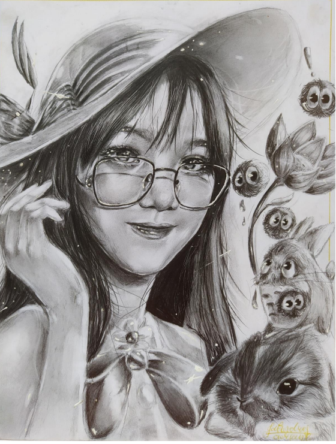

Illustrations
Tranquil
Medium: Watercolor & Digital
Date: January 2021
I was inspired by my childhood movie and I made something out from it. I used watercolor for most parts and digital for very few textures.
Undertale
Medium: Watercolor
Date: February 2021
I turned a pixelated character into my own style.
Blossom
Medium: Watercolor
Date: February 2021
I challenged myself by listening to a certain music and create an artwork basing on how I felt while listening and this is what I came up with.
Summer
Medium: Watercolor & Digital
Date: February 2021
I turned my niece into a anime style and rendered it with watercolors.
Link from the Legend of Zelda
Medium: Watercolor & Gouache
Date: March 2021
I painted my favorite character into my own art style.
Recreational
Medium: Watercolor
Date: March 2021
I made a quick painting for my activity in school
Free of Boundaries
Medium: Watercolor, Gouache, & Digital
Date: April 2021
I had a dream and I decided to paint as best as I can remember to get a better image of it.
Soar
Medium: Watercolor & Digital
Date: January 2021
I was reading a book and I interpreted a sentence and made an art.
Dream
Medium: Watercolor & Gouache
Date: June 2021
My very first-time trying surrealism while maintaining my style in an artwork.

A Day of Melancholy
Medium: Watercolor & White Gouache
Date: June 2021
I was inspired by a story I found on the internet and made a quick painting from it. The woman was overloaded by works but she is planting and reading books to make her feel relaxed.
Man with Pets
Medium: Color Pencils & Markers
Date: October 2020
The concept is inspired from my childhood movies.
Giants
Medium: Color Pencils & Watercolor
Date: February 2021
I put a cute looking cat to contradict the mood on the over all artwork. The concept is inspired to my favorite series.
Graphites


Social Media